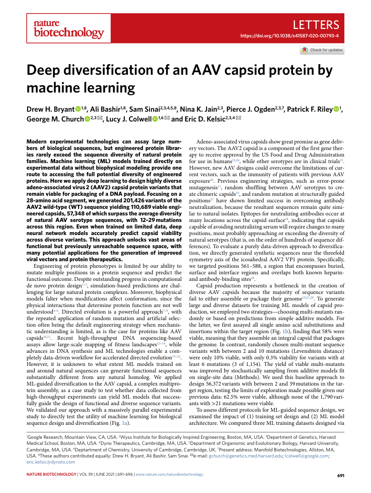
https://doi.org/10.1038/s41587-020-00793-4
Deep diversification of an AAV capsid protein by
machine learning
Drew H. Bryant 1,8, Ali Bashir1,8, Sam Sinai2,3,4,5,8, Nina K. Jain2,3, Pierce J. Ogden2,3,7, Patrick F. Riley 1, George M. Church 2,3 ✉, Lucy J. Colwell 1,6 ✉ and Eric D. Kelsic2,3,4 ✉
Modern experimental technologies can assay large num- Adeno-associated virus capsids show great promise as gene deliv- bers of biological sequences, but engineered protein librar- ery vectors. The AAV2 capsid is a component of the first gene ther- ies rarely exceed the sequence diversity of natural protein apy to receive approval by the US Food and Drug Administration families. Machine learning (ML) models trained directly on for use in humans23,24, while other serotypes are in clinical trials25. experimental data without biophysical modeling provide one However, new AAV designs could overcome the limitations of cur- route to accessing the full potential diversity of engineered rent vectors, such as the immunity of patients with previous AAV proteins. Here we apply deep learning to design highly diverse exposure26. Previous engineering strategies, such as error-prone adeno-associated virus 2 (AAV2) capsid protein variants that mutagenesis11, random shuffling between AAV serotypes to cre- remain viable for packaging of a DNA payload. Focusing on a ate chimeric capsids10, and random mutation at structurally guided 28-amino acid segment, we generated 201,426 variants of the positions27 have shown limited success in overcoming antibody AAV2 wild-type (WT) sequence yielding 110,689 viable engi- neutralization, because the resultant sequences remain quite simi- neered capsids, 57,348 of which surpass the average diversity lar to natural isolates. Epitopes for neutralizing antibodies occur at of natural AAV serotype sequences, with 12–29 mutations many locations across the capsid surface28, indicating that capsids across this region. Even when trained on limited data, deep capable of avoiding neutralizing serum will require changes to many neural network models accurately predict capsid viability positions, most probably approaching or exceeding the diversity of across diverse variants. This approach unlocks vast areas of natural serotypes (that is, on the order of hundreds of sequence dif- functional but previously unreachable sequence space, with ferences). To evaluate a purely data-driven approach to diversifica- many potential applications for the generation of improved tion, we directly generated synthetic sequences near the threefold viral vectors and protein therapeutics. symmetry axis of the icosahedral AAV2 VP1 protein. Specifically, Engineering of protein phenotypes is limited by our ability to we targeted positions 561–588, a region that encompasses buried, mutate multiple positions in a protein sequence and predict the surface and interface regions and overlaps both known heparin- functional outcome. Despite outstanding progress in computational and antibody-binding sites28. de novo protein design1–3, simulation-based predictions are chal- Capsid production represents a bottleneck in the creation of lenging for large natural protein complexes. Moreover, biophysical diverse AAV capsids because the majority of sequence variants models falter when modifications affect conformation, since the fail to either assemble or package their genome19,27,29. To generate physical interactions that determine protein function are not well large and diverse datasets for training ML models of capsid pro- understood4–6. Directed evolution is a powerful approach7–9, with duction, we employed two strategies—choosing multi-mutants ran- the repeated application of random mutation and artificial selec- domly or based on predictions from simple additive models. For tion often being the default engineering strategy when mechanis- the latter, we first assayed all single amino acid substitutions and tic understanding is limited, as is the case for proteins like AAV insertions within the target region (Fig. 1b), finding that 58% were capsids10,11. Recent high-throughput DNA sequencing-based viable, meaning that they assemble an integral capsid that packages assays allow large-scale mapping of fitness landscapes12–14, while the genome. In contrast, randomly chosen multi-mutant sequence advances in DNA synthesis and ML technologies enable a com- variants with between 2 and 10 mutations (Levenshtein distance) pletely data-driven workflow for accelerated directed evolution15–22. were only 10% viable, with only 0.3% viability for variants with at However, it is unknown to what extent ML models trained on least 6 mutations (3 of 1,154). The yield of viable multi-mutants and around natural sequences can generate functional sequences was improved by stochastically sampling from additive models fit substantially different from any natural homolog. We applied on single-site data (Methods). We used this baseline approach to ML-guided diversification to the AAV capsid, a complex multipro- design 56,372 variants with between 2 and 39 mutations in the tar- tein assembly, as a case study to test whether data collected from get region, testing the limits of exploration made possible given our high-throughput experiments can yield ML models that success- previous data: 62.5% were viable, although none of the 1,790 vari- fully guide the design of functional and diverse sequence variants. ants with >21 mutations were viable. We validated our approach with a massively parallel experimental To assess different protocols for ML-guided sequence design, we study to directly test the utility of machine learning for biological examined the impact of (1) training set design and (2) ML model sequence design and diversification (Fig. 1a). architecture. We compared three ML training datasets designed via 1Google Research, Mountain View, CA, USA. 2Wyss Institute for Biologically Inspired Engineering, Boston, MA, USA. 3Department of Genetics, Harvard Medical School, Boston, MA, USA. 4Dyno Therapeutics, Cambridge, MA, USA. 5Department of Organismic and Evolutionary Biology, Harvard University, Cambridge, MA, USA. 6Deptartment of Chemistry, University of Cambridge, Cambridge, UK. 7Present address: Manifold Biotechnologies, Allston, MA, USA. 8These authors contributed equally: Drew H. Bryant, Ali Bashir, Sam Sinai. ✉e-mail: gchurch@genetics.med.harvard.edu; lcolwell@google.com; eric.kelsic@dynotx.com NAtuRE BiOtECHNOLOGy | VOL 39 | JUnE 2021 | 691–696 | www.nature.com/naturebiotechnology 691
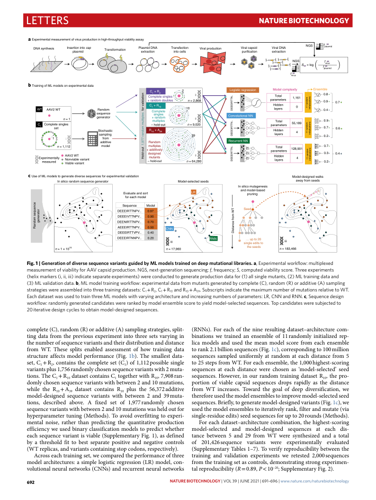
Letters Nature BiotechNology
Logistic regression
Convolutional NN
Recurrent NN
complete (C), random (R) or additive (A) sampling strategies, split- (RNNs). For each of the nine resulting dataset–architecture com- ting data from the previous experiment into three sets varying in binations we trained an ensemble of 11 randomly initialized rep- the number of sequence variants and their distribution and distance lica models and used the mean model score from each ensemble from WT. These splits enabled assessment of how training data to rank 2.1 billion sequences (Fig. 1c), corresponding to 100 million structure affects model performance (Fig. 1b). The smallest data- sequences sampled uniformly at random at each distance from 5 set, C + R, contains the complete set (C) of 1,112 possible single to 25 steps from WT. For each ensemble, the 1,000 highest-scoring 1 2 1 variants plus 1,756 randomly chosen sequence variants with 2 muta- sequences at each distance were chosen as ‘model-selected’ seed tions. The C + R dataset contains C together with R , 7,908 ran- sequences. However, in our random training dataset R , the pro- 1 10 1 10 10 domly chosen sequence variants with between 2 and 10 mutations, portion of viable capsid sequences drops rapidly as the distance while the R + A dataset contains R plus the 56,372 additive from WT increases. Toward the goal of deep diversification, we 10 39 10 model-designed sequence variants with between 2 and 39 muta- therefore used the model ensembles to improve model-selected seed tions, described above. A fixed set of 1,977 randomly chosen sequences. Briefly, to generate model-designed variants (Fig. 1c), we sequence variants with between 2 and 10 mutations was held out for used the model ensembles to iteratively rank, filter and mutate (via hyperparameter tuning (Methods). To avoid overfitting to experi- single-residue edits) seed sequences for up to 20 rounds (Methods). mental noise, rather than predicting the quantitative production For each dataset–architecture combination, the highest-scoring efficiency we used binary classification models to predict whether model-selected and model-designed sequences at each dis- each sequence variant is viable (Supplementary Fig. 1), as defined tance between 5 and 29 from WT were synthesized and a total by a threshold fit to best separate positive and negative controls of 201,426 sequence variants were experimentally evaluated (WT replicas, and variants containing stop codons, respectively). (Supplementary Tables 1–7). To verify reproducibility between the Across each training set, we compared the performance of three training and validation experiments we retested 2,000 sequences model architectures: a simple logistic regression (LR) model, con- from the training set as controls, demonstrating strong experimen- volutional neural networks (CNNs) and recurrent neural networks tal reproducibility (R = 0.89, P < 10–20; Supplementary Fig. 2). ..NTTRIEEED ... ..NTTRIEEED ..NTTRIEEED DNA synthesis Inse p rt l i a o s n m in id to cap Transformation Pl e a x s t m ra id ct i D o N n A Tr i a n n to s f c e e c l t l i s on Viral production V p ir u a r l i fi c c a a p ti s o id n V ex ir t a ra l c D t N io A n NGS fplasmid NGS fvirus fplasmid fvirus Model complexity Total 1,161 parameters Hidden layers 0 noitadilav rof selpitlum modnar 779,1 tuo-dloH a Experimental measurement of virus production in high-throughput viability assay C C o 1 m + p l R et 2 e singles 2 ii + random doubles n = 2,868 WT AAV2 WT Random Complete 10 sequence singles n = 1 generator + m r u a l n tip d l o e m s ii C1 Comple s t e e t singles – hold-out n = 9,020 Stochastic R10 + A39 sampling 39 1 i from additive Random n = 1,112 model multiples + additively Ex m pe e r a im su e r n e t d ally V A N i A o a n V b v l 2 e ia W v b a l T e ri a v n a t riant – d m e h u s o i t l g a d n n -o e ts u d t n = 64 i , i 280 Sequence Model DEEEIRTTNPV.. 0.97 DEEEIVTTNPV.. 0.90 DEENIRTTNPV.. 0.70 AEEEIRTTNPV.. 0.50 DEEEIRTTVPV.. 0.40 DEEEIRTNNPV.. 0.20 ecneuqes modnaR rotareneg Model-designed walks Model-selected seeds away from seeds Evaluate and sort LR for each model CNN RNN n ≈ 1 × 1010 n = 17,960 TW morf ecnatsiD In silico random sequence generator In silico mutagenesis and model-based pruning Seed … up to 20 single edits to the seeds modnar 11 snoitazilaitini 0.8 0.9 0.7 ... 0.4 Total 55,189 parameters Hidden 4 layers modnar 11 snoitazilaitini 0.9 0.7 0.6 ... 0.2 modnar 11 snoitazilaitini S = log b Training of ML models on experimental data Ensemble C1 + R10 Total 128,901 0.7 parameters 0.3 0.4 H la id y d e e rs n 4 ... 0.2 c Use of ML models to generate diverse sequences for experimental validation iii iii n = 183,466 Fig. 1 | Generation of diverse sequence variants guided by ML models trained on deep mutational libraries. a, Experimental workflow: multiplexed measurement of viability for AAV capsid production. nGS, next-generation sequencing; f, frequency; S, computed viability score. Three experiments (helix markers (i, ii, iii) indicate separate experiments) were conducted to generate production data for (1) all single mutants, (2) ML training data and (3) ML validation data. b, ML model training workflow: experimental data from mutants generated by complete (C), random (R) or additive (A) sampling strategies were assembled into three training datasets: C 1 + R 2 , C 1 + R 10 and R 10 + A 39 . Subscripts indicate the maximum number of mutations relative to WT. Each dataset was used to train three ML models with varying architecture and increasing numbers of parameters: LR, Cnn and Rnn. c, Sequence design workflow: randomly generated candidates were ranked by model ensemble score to yield model-selected sequences. Top candidates were subjected to 20 iterative design cycles to obtain model-designed sequences. 692 NAtuRE BiOtECHNOLOGy | VOL 39 | JUnE 2021 | 691–696 | www.nature.com/naturebiotechnology
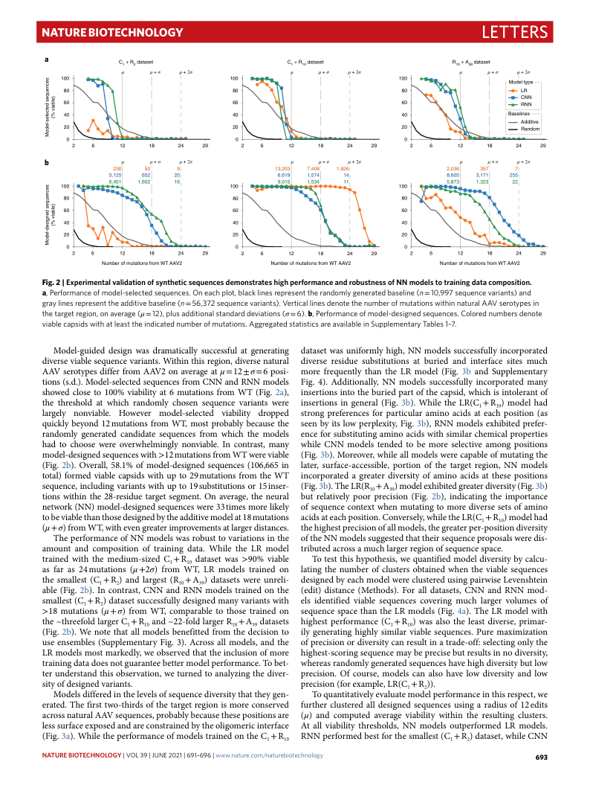
Nature BiotechNology Letters
C + R dataset C + R dataset R + A dataset 1 2 1 10 10 39 µ µ + σ µ + 2σ µ µ + σ µ + 2σ µ µ + σ µ + 2σ
µ µ + σ µ + 2σ µ µ + σ µ + 2σ µ µ + σ µ + 2σ
Number of mutations from WT AAV2 Number of mutations from WT AAV2 Number of mutations from WT AAV2
Model-guided design was dramatically successful at generating dataset was uniformly high, NN models successfully incorporated diverse viable sequence variants. Within this region, diverse natural diverse residue substitutions at buried and interface sites much AAV serotypes differ from AAV2 on average at μ = 12 ± σ = 6 posi- more frequently than the LR model (Fig. 3b and Supplementary tions (s.d.). Model-selected sequences from CNN and RNN models Fig. 4). Additionally, NN models successfully incorporated many showed close to 100% viability at 6 mutations from WT (Fig. 2a), insertions into the buried part of the capsid, which is intolerant of the threshold at which randomly chosen sequence variants were insertions in general (Fig. 3b). While the LR(C + R ) model had 1 10 largely nonviable. However model-selected viability dropped strong preferences for particular amino acids at each position (as quickly beyond 12 mutations from WT, most probably because the seen by its low perplexity, Fig. 3b), RNN models exhibited prefer- randomly generated candidate sequences from which the models ence for substituting amino acids with similar chemical properties had to choose were overwhelmingly nonviable. In contrast, many while CNN models tended to be more selective among positions model-designed sequences with >12 mutations from WT were viable (Fig. 3b). Moreover, while all models were capable of mutating the (Fig. 2b). Overall, 58.1% of model-designed sequences (106,665 in later, surface-accessible, portion of the target region, NN models total) formed viable capsids with up to 29 mutations from the WT incorporated a greater diversity of amino acids at these positions sequence, including variants with up to 19 substitutions or 15 inser- (Fig. 3b). The LR(R + A ) model exhibited greater diversity (Fig. 3b) 10 39 tions within the 28-residue target segment. On average, the neural but relatively poor precision (Fig. 2b), indicating the importance network (NN) model-designed sequences were 33 times more likely of sequence context when mutating to more diverse sets of amino to be viable than those designed by the additive model at 18 mutations acids at each position. Conversely, while the LR(C + R ) model had 1 10 (μ + σ) from WT, with even greater improvements at larger distances. the highest precision of all models, the greater per-position diversity The performance of NN models was robust to variations in the of the NN models suggested that their sequence proposals were dis- amount and composition of training data. While the LR model tributed across a much larger region of sequence space. trained with the medium-sized C + R dataset was >90% viable To test this hypothesis, we quantified model diversity by calcu- 1 10 as far as 24 mutations (μ +2σ) from WT, LR models trained on lating the number of clusters obtained when the viable sequences the smallest (C + R) and largest (R + A ) datasets were unreli- designed by each model were clustered using pairwise Levenshtein 1 2 10 39 able (Fig. 2b). In contrast, CNN and RNN models trained on the (edit) distance (Methods). For all datasets, CNN and RNN mod- smallest (C + R) dataset successfully designed many variants with els identified viable sequences covering much larger volumes of 1 2 >18 mutations (μ + σ) from WT, comparable to those trained on sequence space than the LR models (Fig. 4a). The LR model with the ~threefold larger C + R and ~22-fold larger R + A datasets highest performance (C + R ) was also the least diverse, primar- 1 10 10 39 1 10 (Fig. 2b). We note that all models benefitted from the decision to ily generating highly similar viable sequences. Pure maximization use ensembles (Supplementary Fig. 3). Across all models, and the of precision or diversity can result in a trade-off: selecting only the LR models most markedly, we observed that the inclusion of more highest-scoring sequence may be precise but results in no diversity, training data does not guarantee better model performance. To bet- whereas randomly generated sequences have high diversity but low ter understand this observation, we turned to analyzing the diver- precision. Of course, models can also have low diversity and low sity of designed variants. precision (for example, LR(C + R)). 1 2 Models differed in the levels of sequence diversity that they gen- To quantitatively evaluate model performance in this respect, we erated. The first two-thirds of the target region is more conserved further clustered all designed sequences using a radius of 12 edits across natural AAV sequences, probably because these positions are (μ) and computed average viability within the resulting clusters. less surface exposed and are constrained by the oligomeric interface At all viability thresholds, NN models outperformed LR models. (Fig. 3a). While the performance of models trained on the C + R RNN performed best for the smallest (C + R) dataset, while CNN 1 10 1 2 secneuqes detceles-ledoM secneuqes dengised-ledoM )elbaiv %( )elbaiv %( a 100 100 100 Model type 80 80 80 LR CNN 60 60 60 RNN 40 40 40 Baselines Additive 20 20 20 Random 0 0 0 2 6 12 18 24 29 2 6 12 18 24 29 2 6 12 18 24 29 b 230 50 9 13,203 7,408 1,626 2,036 257 7 5,125 652 20 6,619 1,574 14 8,605 3,171 255 6,451 1,602 16 9,015 1,534 11 5,873 1,323 22 100 100 100 80 80 80 60 60 60 40 40 40 20 20 20 0 0 0 2 6 12 18 24 29 2 6 12 18 24 29 2 6 12 18 24 29 Fig. 2 | Experimental validation of synthetic sequences demonstrates high performance and robustness of NN models to training data composition. a, Performance of model-selected sequences. On each plot, black lines represent the randomly generated baseline (n = 10,997 sequence variants) and gray lines represent the additive baseline (n = 56,372 sequence variants). Vertical lines denote the number of mutations within natural AAV serotypes in the target region, on average (μ = 12), plus additional standard deviations (σ = 6). b, Performance of model-designed sequences. Colored numbers denote viable capsids with at least the indicated number of mutations. Aggregated statistics are available in Supplementary Tables 1–7. NAtuRE BiOtECHNOLOGy | VOL 39 | JUnE 2021 | 691–696 | www.nature.com/naturebiotechnology 693
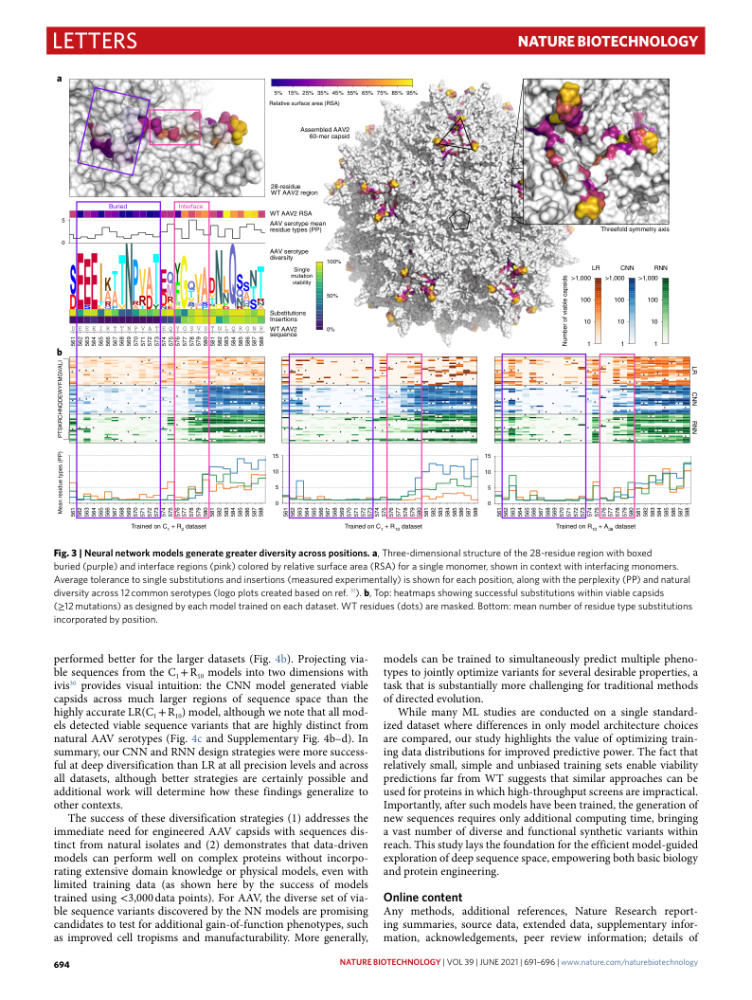
Letters Nature BiotechNology
Trained on C + R dataset Trained on C + R dataset Trained on R + A dataset 1 2 1 10 10 39
performed better for the larger datasets (Fig. 4b). Projecting via- models can be trained to simultaneously predict multiple pheno- ble sequences from the C + R models into two dimensions with types to jointly optimize variants for several desirable properties, a 1 10 ivis30 provides visual intuition: the CNN model generated viable task that is substantially more challenging for traditional methods capsids across much larger regions of sequence space than the of directed evolution. highly accurate LR(C + R ) model, although we note that all mod- While many ML studies are conducted on a single standard- 1 10 els detected viable sequence variants that are highly distinct from ized dataset where differences in only model architecture choices natural AAV serotypes (Fig. 4c and Supplementary Fig. 4b–d). In are compared, our study highlights the value of optimizing train- summary, our CNN and RNN design strategies were more success- ing data distributions for improved predictive power. The fact that ful at deep diversification than LR at all precision levels and across relatively small, simple and unbiased training sets enable viability all datasets, although better strategies are certainly possible and predictions far from WT suggests that similar approaches can be additional work will determine how these findings generalize to used for proteins in which high-throughput screens are impractical. other contexts. Importantly, after such models have been trained, the generation of The success of these diversification strategies (1) addresses the new sequences requires only additional computing time, bringing immediate need for engineered AAV capsids with sequences dis- a vast number of diverse and functional synthetic variants within tinct from natural isolates and (2) demonstrates that data-driven reach. This study lays the foundation for the efficient model-guided models can perform well on complex proteins without incorpo- exploration of deep sequence space, empowering both basic biology rating extensive domain knowledge or physical models, even with and protein engineering. limited training data (as shown here by the success of models trained using <3,000 data points). For AAV, the diverse set of via- Online content ble sequence variants discovered by the NN models are promising Any methods, additional references, Nature Research report- candidates to test for additional gain-of-function phenotypes, such ing summaries, source data, extended data, supplementary infor- as improved cell tropisms and manufacturability. More generally, mation, acknowledgements, peer review information; details of ILAVGMFYWEDQNHCRKSTP )PP( sepyt eudiser naeM LR CNN RNN Assembled AAV2 60-mer capsid 28-residue WT AAV2 region Threefold symmetry axis LR CNN RNN >1,000 >1,000 >1,000 100 100 100 10 10 10 1 1 1 b sdispac elbaiv fo rebmuN a 5% 15%25%35%45%55%65%75%85%95% Relative surface area (RSA) Buried Interface WT AAV2 RSA AAV serotype mean residue types (PP) AAV serotype diversity 100% Single mutation viability 50% Substitutions Insertions DEEEIRTTNPVATEQYGSVSTNLQRGNR W se T q u A e A n V ce 2 0% 165 165 265 265 365 365 465 465 565 565 665 665 765 765 865 865 965 965 075 075 175 175 275 275 375 375 475 475 575 575 675 675 775 775 875 875 975 975 085 085 185 185 285 285 385 385 485 485 585 585 685 685 785 785 885 885 165 265 365 465 565 665 765 865 965 075 175 275 375 475 575 675 775 875 975 085 185 285 385 485 585 685 785 885 165 265 365 465 565 665 765 865 965 075 175 275 375 475 575 675 775 875 975 085 185 285 385 485 585 685 785 885 5 0 15 15 10 10 5 5 0 0 Fig. 3 | Neural network models generate greater diversity across positions. a, Three-dimensional structure of the 28-residue region with boxed buried (purple) and interface regions (pink) colored by relative surface area (RSA) for a single monomer, shown in context with interfacing monomers. Average tolerance to single substitutions and insertions (measured experimentally) is shown for each position, along with the perplexity (PP) and natural diversity across 12 common serotypes (logo plots created based on ref. 31). b, Top: heatmaps showing successful substitutions within viable capsids (≥12 mutations) as designed by each model trained on each dataset. WT residues (dots) are masked. Bottom: mean number of residue type substitutions incorporated by position. 694 NAtuRE BiOtECHNOLOGy | VOL 39 | JUnE 2021 | 691–696 | www.nature.com/naturebiotechnology
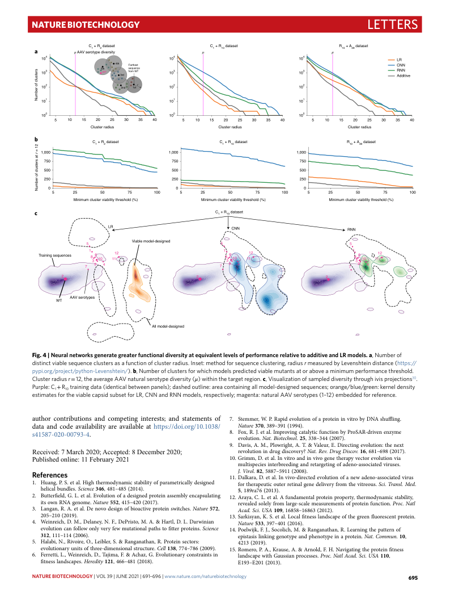
Nature BiotechNology Letters
Minimum cluster viability threshold (%) Minimum cluster viability threshold (%) Minimum cluster viability threshold (%) c
LR CNN RNN Viable model-designed
Training sequences
All model-designed
author contributions and competing interests; and statements of 7. Stemmer, W. P. Rapid evolution of a protein in vitro by DNA shuffling. data and code availability are available at https://doi.org/10.1038/ Nature 370, 389–391 (1994). s41587-020-00793-4. 8. Fox, R. J. et al. Improving catalytic function by ProSAR-driven enzyme evolution. Nat. Biotechnol. 25, 338–344 (2007). 9. Davis, A. M., Plowright, A. T. & Valeur, E. Directing evolution: the next Received: 7 March 2020; Accepted: 8 December 2020; revolution in drug discovery? Nat. Rev. Drug Discov. 16, 681–698 (2017). Published online: 11 February 2021 10. Grimm, D. et al. In vitro and in vivo gene therapy vector evolution via multispecies interbreeding and retargeting of adeno-associated viruses. J. Virol. 82, 5887–5911 (2008). References 11. Dalkara, D. et al. In vivo-directed evolution of a new adeno-associated virus 1. Huang, P. S. et al. High thermodynamic stability of parametrically designed for therapeutic outer retinal gene delivery from the vitreous. Sci. Transl. Med. helical bundles. Science 346, 481–485 (2014). 5, 189ra76 (2013). 2. Butterfield, G. L. et al. Evolution of a designed protein assembly encapsulating 12. Araya, C. L. et al. A fundamental protein property, thermodynamic stability, its own RNA genome. Nature 552, 415–420 (2017). revealed solely from large-scale measurements of protein function. Proc. Natl 3. Langan, R. A. et al. De novo design of bioactive protein switches. Nature 572, Acad. Sci. USA 109, 16858–16863 (2012). 205–210 (2019). 13. Sarkisyan, K. S. et al. Local fitness landscape of the green fluorescent protein. 4. Weinreich, D. M., Delaney, N. F., DePristo, M. A. & Hartl, D. L. Darwinian Nature 533, 397–401 (2016). evolution can follow only very few mutational paths to fitter proteins. Science 14. Poelwijk, F. J., Socolich, M. & Ranganathan, R. Learning the pattern of 312, 111–114 (2006). epistasis linking genotype and phenotype in a protein. Nat. Commun. 10, 5. Halabi, N., Rivoire, O., Leibler, S. & Ranganathan, R. Protein sectors: 4213 (2019). evolutionary units of three-dimensional structure. Cell 138, 774–786 (2009). 15. Romero, P. A., Krause, A. & Arnold, F. H. Navigating the protein fitness 6. Ferretti, L., Weinreich, D., Tajima, F. & Achaz, G. Evolutionary constraints in landscape with Gaussian processes. Proc. Natl Acad. Sci. USA 110, fitness landscapes. Heredity 121, 466–481 (2018). E193–E201 (2013). 21 = r ta sretsulc fo rebmuN Cluster radius Cluster radius Cluster radius b C1 + R2 dataset C1 + R10 dataset R10 + A39 dataset C1 + R10 dataset sretsulc fo rebmuN a µ AAV se C ro 1 t y + p R e 2 d d iv a e ta rs s i e ty t µ C1 + R10 dataset µ R10 + A39 dataset 104 104 104 LR 4th Farthest CNN 103 5 W th T s fr e o q m u e W n T ce 103 103 RNN 3rd Additive 102 2nd 1st r 102 102 101 101 101 100 100 100 5 10 15 20 25 30 35 40 5 10 15 20 25 30 35 40 5 10 15 20 25 30 35 40 1,000 1,000 1,000 750 750 750 500 500 500 250 250 250 0 0 0 5 25 50 75 100 5 25 50 75 100 5 25 50 75 100 5 5 5 1 1 1 8 3 6 10 11 12 8 3 6 10 11 12 8 3 6 10 11 12 7 9 4 7 9 4 7 9 4 2 2 2 AAV serotypes Fig. 4 | Neural networks generate greater functional diversity at equivalent levels of performance relative to additive and LR models. a, number of distinct viable sequence clusters as a function of cluster radius. Inset: method for sequence clustering, radius r measured by Levenshtein distance (https:// pypi.org/project/python-Levenshtein/). b, number of clusters for which models predicted viable mutants at or above a minimum performance threshold. Cluster radius r = 12, the average AAV natural serotype diversity (μ) within the target region. c, Visualization of sampled diversity through ivis projections30. Purple: C 1 + R 10 training data (identical between panels); dashed outline: area containing all model-designed sequences; orange/blue/green: kernel density estimates for the viable capsid subset for LR, Cnn and Rnn models, respectively; magenta: natural AAV serotypes (1–12) embedded for reference. NAtuRE BiOtECHNOLOGy | VOL 39 | JUnE 2021 | 691–696 | www.nature.com/naturebiotechnology 695
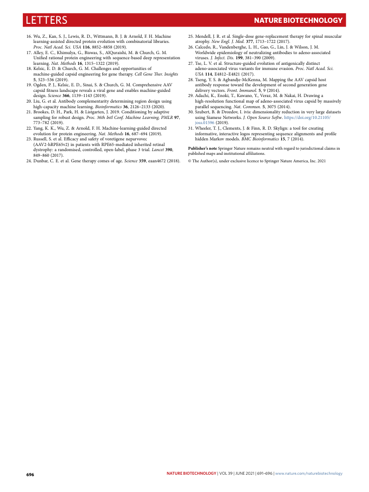
Letters Nature BiotechNology
16. Wu, Z., Kan, S. J., Lewis, R. D., Wittmann, B. J. & Arnold, F. H. Machine 25. Mendell, J. R. et al. Single-dose gene-replacement therapy for spinal muscular learning-assisted directed protein evolution with combinatorial libraries. atrophy. New Engl. J. Med. 377, 1713–1722 (2017). Proc. Natl Acad. Sci. USA 116, 8852–8858 (2019). 26. Calcedo, R., Vandenberghe, L. H., Gao, G., Lin, J. & Wilson, J. M. 17. Alley, E. C., Khimulya, G., Biswas, S., AlQuraishi, M. & Church, G. M. Worldwide epidemiology of neutralizing antibodies to adeno-associated Unified rational protein engineering with sequence-based deep representation viruses. J. Infect. Dis. 199, 381–390 (2009). learning. Nat. Methods 16, 1315–1322 (2019). 27. Tse, L. V. et al. Structure-guided evolution of antigenically distinct 18. Kelsic, E. D. & Church, G. M. Challenges and opportunities of adeno-associated virus variants for immune evasion. Proc. Natl Acad. Sci. machine-guided capsid engineering for gene therapy. Cell Gene Ther. Insights USA 114, E4812–E4821 (2017). 5, 523–536 (2019). 28. Tseng, Y. S. & Agbandje-McKenna, M. Mapping the AAV capsid host 19. Ogden, P. J., Kelsic, E. D., Sinai, S. & Church, G. M. Comprehensive AAV antibody response toward the development of second generation gene capsid fitness landscape reveals a viral gene and enables machine-guided delivery vectors. Front. Immunol. 5, 9 (2014). design. Science 366, 1139–1143 (2019). 29. Adachi, K., Enoki, T., Kawano, Y., Veraz, M. & Nakai, H. Drawing a 20. Liu, G. et al. Antibody complementarity determining region design using high-resolution functional map of adeno-associated virus capsid by massively high-capacity machine learning. Bioinformatics 36, 2126–2133 (2020). parallel sequencing. Nat. Commun. 5, 3075 (2014). 21. Brookes, D. H., Park, H. & Listgarten, J. 2019. Conditioning by adaptive 30. Szubert, B. & Drozdov, I. ivis: dimensionality reduction in very large datasets sampling for robust design. Proc. 36th Intl Conf. Machine Learning, PMLR 97, using Siamese Networks. J. Open Source Softw. https://doi.org/10.21105/ 773–782 (2019). joss.01596 (2019). 22. Yang, K. K., Wu, Z. & Arnold, F. H. Machine-learning-guided directed 31. Wheeler, T. J., Clements, J. & Finn, R. D. Skylign: a tool for creating evolution for protein engineering. Nat. Methods 16, 687–694 (2019). informative, interactive logos representing sequence alignments and profile 23. Russell, S. et al. Efficacy and safety of voretigene neparvovec hidden Markov models. BMC Bioinformatics 15, 7 (2014). (AAV2-hRPE65v2) in patients with RPE65-mediated inherited retinal dystrophy: a randomised, controlled, open-label, phase 3 trial. Lancet 390, Publisher’s note Springer Nature remains neutral with regard to jurisdictional claims in 849–860 (2017). published maps and institutional affiliations. 24. Dunbar, C. E. et al. Gene therapy comes of age. Science 359, eaan4672 (2018). © The Author(s), under exclusive licence to Springer Nature America, Inc. 2021
696 NAtuRE BiOtECHNOLOGy | VOL 39 | JUnE 2021 | 691–696 | www.nature.com/naturebiotechnology
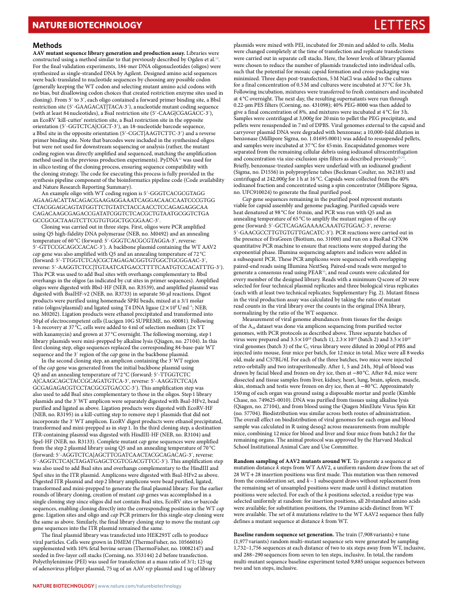
Nature BiotechNology Letters
Methods plasmids were mixed with PEI, incubated for 20 min and added to cells. Media AAV mutant sequence library generation and production assay. Libraries were were changed completely at the time of transfection and replicate transfections constructed using a method similar to that previously described by Ogden et al.19. were carried out in separate cell stacks. Here, the lower levels of library plasmid For the final validation experiments, 184-mer DNA oligonucleotides (oligos) were were chosen to reduce the number of plasmids transfected into individual cells, synthesized as single-stranded DNA by Agilent. Designed amino acid sequences such that the potential for mosaic capsid formation and cross-packaging was were back-translated to nucleotide sequences by choosing any possible codon minimized. Three days post-transfection, 5 M NaCl was added to the cultures (generally keeping the WT codon and selecting mutant amino acid codons with for a final concentration of 0.5 M and cultures were incubated at 37 °C for 3 h. no bias, but disallowing codon choices that created restriction enzyme sites used in Following incubation, mixtures were transferred to fresh containers and incubated cloning). From 5′ to 3′, each oligo contained a forward primer binding site, a BbsI at 4 °C overnight. The next day, the resulting supernatants were run through restriction site (5′-GAAGACAT|TACA-3′), a nucleotide mutant coding sequence 0.22-µm PES filters (Corning, no. 431098); 40% PEG-8000 was then added to (with at least 84 nucleotides), a BsaI restriction site (5′-CAAG|CGAGACC-3′), give a final concentration of 8%, and mixtures were incubated at 4 °C for 3 h. an EcoRV ‘kill-cutter’ restriction site, a BsaI restriction site in the opposite Samples were centrifuged at 3,000g for 20 min to pellet the PEG precipitate, and orientation (5′-GGTCTCA|CGCT-3′), an 18-nucleotide barcode sequence, pellets were resuspended in 7 ml of DPBS. Viral genomes external to the capsid and a BbsI site in the opposite orientation (5′-CGCT|AAGTCTTC-3′) and a reverse carryover plasmid DNA were degraded with benzonase; a 10,000-fold dilution in primer binding site. Note that barcodes were included in the synthesized oligos benzonase (Millipore Sigma, no. 1.01695.0001) was added to resuspended pellets, but were not used for downstream sequencing or analysis (rather, the mutant and samples were incubated at 37 °C for 45 min. Encapsidated genomes were coding region was directly amplified and sequenced, matching the amplification separated from the remaining cellular debris using iodixanol ultracentrifugation method used in the previous production experiments). PyDNA32 was used for and concentration via size-exclusion spin filters as described previously19,33. in silico testing of the cloning process, ensuring sequence compatibility with Briefly, benzonase-treated samples were underlaid with an iodixanol gradient the cloning strategy. The code for executing this process is fully provided in the (Sigma, no. D1556) in polypropylene tubes (Beckman Coulter, no. 362183) and synthesis pipeline component of the bioinformatics pipeline code (Code availability centrifuged at 242,000g for 1 h at 16 °C. Capsids were collected from the 40% and Nature Research Reporting Summary). iodixanol fraction and concentrated using a spin concentrator (Millipore Sigma, An example oligo with WT coding region is 5 ′- G G G T C A C G C G T A G G no. UFC910024) to generate the final purified pool. A G A A G A C A T T A C A G A C G A A G A G G A A A T C A G G A C A A C C A A T C C C G T G G Cap gene sequences remaining in the purified pool represent mutants C TA C G G A G C A G T A T G G T TC T G T A T C T A C C A A C C TC C A GA G A GG C A A viable for capsid assembly and genome packaging. Purified capsids were C A G AC AA GC GA GA CC GA TATCGGTCTCACGCTGTAATGCGGTCTGA heat denatured at 98 °C for 10 min, and PCR was run with Q5 and an GCCGCGCTAAGTCTTCGTGTGGCTGCGGAAC-3′. annealing temperature of 65 °C to amplify the mutant region of the cap Cloning was carried out in three steps. First, oligos were PCR amplified gene (forward: 5′-GCTCAGAGAAAACAAATGTGGAC-3′, reverse: using Q5 high-fidelity DNA polymerase (NEB, no. M0492) and an annealing 5′-GAACGCCTTGTGTGTTGACATC-3′). PCR reactions were carried out in temperature of 60 °C (forward: 5′-GGGTCACGCGTAGGA-3′, reverse: the presence of EvaGreen (Biotium, no. 31000) and run on a BioRad CFX96 5′-GTTCCGCAGCCACAC-3′). A backbone plasmid containing the WT AAV2 quantitative PCR machine to ensure that reactions were stopped during the cap gene was also amplified with Q5 and an annealing temperature of 72 °C exponential phase. Illumina sequencing adapters and indices were added in (forward: 5′-TTGGTCTCA|CGCTAGAGACGGTGTGGCTGCGGAAC-3′, a subsequent PCR. These PCR amplicons were sequenced with overlapping reverse: 5′-AAGGTCTCC|TGTAATCATGACCTTTTCAATGTCCACATTTG-3′). paired-end reads using Illumina NextSeq. Paired-end reads were merged to This PCR was used to add BsaI sites with overhangs complementary to BbsI generate a consensus read using PEAR34, and read counts were calculated for overhangs in the oligos (as indicated by cut sites in primer sequences). Amplified every member of the designed library. Reads with a minimum Q score of 20 were oligos were digested with BbsI-HF (NEB, no. R3539), and amplified plasmid was selected for four technical plasmid replicates and three biological virus replicates digested with BsaIHF-v2 (NEB, no. R3733) in separate 50-µl reactions. Digest (each with at least two technical replicates; Supplementary Fig. 2). Mutant fitness products were purified using homemade SPRI beads, mixed at a 3/1 molar in the viral production assay was calculated by taking the ratio of mutant ratio (oligos/plasmid) and ligated using T4 DNA ligase (2 × 106 U ml–1; NEB, read counts in the viral library over the counts in the original DNA library, no. M0202). Ligation products were ethanol precipitated and transformed into normalizing by the ratio of the WT sequence. 50 µl of electrocompetent cells (Lucigen 10G SUPREME, no. 60081). Following Measurement of viral genome abundances from tissues for the design 1-h recovery at 37 °C, cells were added to 4 ml of selection medium (2× YT of the A 39 dataset was done via amplicon sequencing from purified vector with kanamycin) and grown at 37 °C overnight. The following morning, step 1 genomes, with PCR protocols as described above. Three separate batches of library plasmids were mini-prepped by alkaline lysis (Qiagen, no. 27104). In this virus were prepared and 3.5 × 1010 (batch 1), 2.3 × 1010 (batch 2) and 3.5 × 1010 first cloning step, oligo sequences replaced the corresponding 84-base-pair WT viral genomes (batch 3) of the C 1 virus library were diluted in 200 µl of PBS and sequence and the 3′ region of the cap gene in the backbone plasmid. injected into mouse, four mice per batch, for 12 mice in total. Mice were all 8 weeks In the second cloning step, an amplicon containing the 3′ WT region old, male and C57BL/6J. For each of the three batches, two mice were injected of the cap gene was generated from the initial backbone plasmid using retro-orbitally and two intraperitoneally. After 1, 5 and 24 h, 30 µl of blood was Q5 and an annealing temperature of 72 °C (forward: 5′-TTGGTCTC drawn by facial bleed and frozen on dry ice, then at −80 °C. After 8 d, mice were A|CAAGCAGCTACCGCAGATGTCA-3′, reverse: 5′-AAGGTCTCA|A dissected and tissue samples from liver, kidney, heart, lung, brain, spleen, muscle, GCGAGAGACGTCCTACGCGTGACCC-3′). This amplification step was skin, stomach and testis were frozen on dry ice, then at −80 °C. Approximately also used to add BsaI sites complementary to those in the oligos. Step 1 library 150 mg of each organ was ground using a disposable mortar and pestle (Kimble plasmids and the 3′ WT amplicon were separately digested with BsaI-HFv2, bead Chase, no. 749625-0010). DNA was purified from tissues using alkaline lysis purified and ligated as above. Ligation products were digested with EcoRV-HF (Qiagen, no. 27104), and from blood using the Qiagen MinElute Virus Spin Kit (NEB, no. R3195) in a kill-cutting step to remove step 1 plasmids that did not (no. 57704). Biodistribution was similar across both routes of administration. incorporate the 3′ WT amplicon. EcoRV digest products were ethanol precipitated, The overall effect on biodistribution of viral genomes for each organ and blood transformed and mini-prepped as in step 1. In the third cloning step, a destination sample was calculated in R using deseq2 across measurements from multiple ITR-containing plasmid was digested with HindIII-HF (NEB, no. R3104) and mice, combining 12 mice for blood and liver and four mice from batch 2 for the SpeI-HF (NEB, no. R3133). Complete mutant cap gene sequences were amplified remaining organs. The animal protocol was approved by the Harvard Medical from the step 2 plasmid library using Q5 and an annealing temperature of 70 °C School Institutional Animal Care and Use Committee. (forward: 5′-AGGTCTCA|AGCTTCGATCAACTACGCAGACAG-3′, reverse: 5′-AGGTCTCA|CTAGATGAGCTCGTCGACGTTCC-3′). This amplification step Random sampling of AAV2 mutants around WT. To generate a sequence at was also used to add BsaI sites and overhangs complementary to the HindIII and mutation distance k steps from WT AAV2, a uniform random draw from the set of SpeI sites in the ITR plasmid. Amplicons were digested with BsaI-HFv2 as above. 28 WT + 28 insertion positions was first made. This mutation was then removed Digested ITR plasmid and step 2 library amplicons were bead purified, ligated, from the consideration set, and k – 1 subsequent draws without replacement from transformed and mini-prepped to generate the final plasmid library. For the earlier the remaining set of unsampled positions were made until k distinct mutation rounds of library cloning, creation of mutant cap genes was accomplished in a positions were selected. For each of the k positions selected, a residue type was single cloning step since oligos did not contain BsaI sites, EcoRV sites or barcode selected uniformly at random: for insertion positions, all 20 standard amino acids sequences, enabling cloning directly into the corresponding position in the WT cap were available; for substitution positions, the 19 amino acids distinct from WT gene. Ligation sites and oligo and cap PCR primers for this single-step cloning were were available. The set of k mutations relative to the WT AAV2 sequence then fully the same as above. Similarly, the final library cloning step to move the mutant cap defines a mutant sequence at distance k from WT. gene sequences into the ITR plasmid remained the same. The final plasmid library was transfected into HEK293T cells to produce Baseline random sequence set generation. The train (7,908 variants) + tune viral particles. Cells were grown in DMEM (ThermoFisher, no. 10566016) (1,977 variants) random multi-mutant sequence sets were generated by sampling supplemented with 10% fetal bovine serum (ThermoFisher, no. 10082147) and 1,732–1,756 sequences at each distance of two to six steps away from WT, inclusive, seeded in five-layer cell stacks (Corning, no. 353144) 2 d before transfection. and 288–290 sequences from seven to ten steps, inclusive. In total, the random Polyethylenimine (PEI) was used for transfection at a mass ratio of 3/1; 125 ug multi-mutant sequence baseline experiment tested 9,885 unique sequences between of adenovirus pHelper plasmid, 75 ug of an AAV rep plasmid and 1 ug of library two and ten steps, inclusive. NAtuRE BiOtECHNOLOGy | www.nature.com/naturebiotechnology
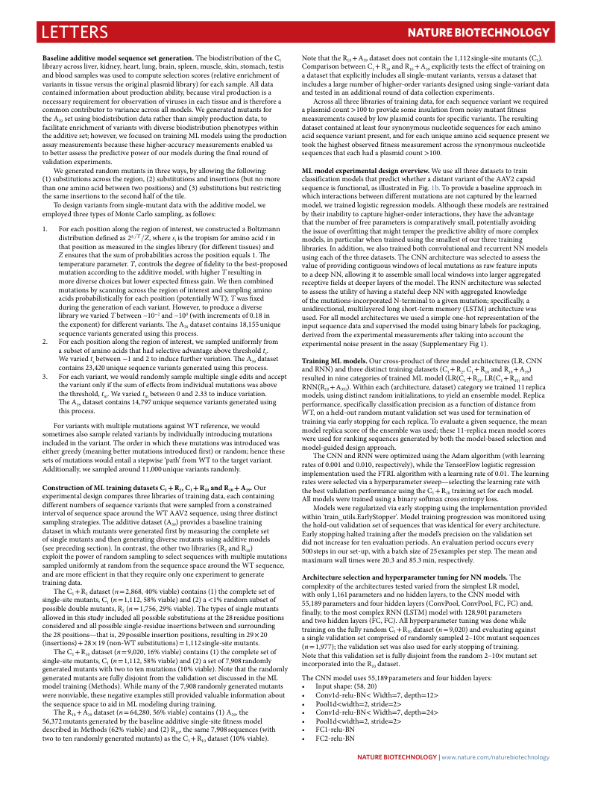
Letters Nature BiotechNology
Baseline additive model sequence set generation. The biodistribution of the C 1 Note that the R 10 + A 39 dataset does not contain the 1,112 single-site mutants (C 1 ). library across liver, kidney, heart, lung, brain, spleen, muscle, skin, stomach, testis Comparison between C 1 + R 10 and R 10 + A 39 explicitly tests the effect of training on and blood samples was used to compute selection scores (relative enrichment of a dataset that explicitly includes all single-mutant variants, versus a dataset that variants in tissue versus the original plasmid library) for each sample. All data includes a large number of higher-order variants designed using single-variant data contained information about production ability, because viral production is a and tested in an additional round of data collection experiments. necessary requirement for observation of viruses in each tissue and is therefore a Across all three libraries of training data, for each sequence variant we required common contributor to variance across all models. We generated mutants for a plasmid count >100 to provide some insulation from noisy mutant fitness the A set using biodistribution data rather than simply production data, to measurements caused by low plasmid counts for specific variants. The resulting 39 facilitate enrichment of variants with diverse biodistribution phenotypes within dataset contained at least four synonymous nucleotide sequences for each amino the additive set; however, we focused on training ML models using the production acid sequence variant present, and for each unique amino acid sequence present we assay measurements because these higher-accuracy measurements enabled us took the highest observed fitness measurement across the synonymous nucleotide to better assess the predictive power of our models during the final round of sequences that each had a plasmid count >100. validation experiments. We generated random mutants in three ways, by allowing the following: ML model experimental design overview. We use all three datasets to train (1) substitutions across the region, (2) substitutions and insertions (but no more classification models that predict whether a distant variant of the AAV2 capsid than one amino acid between two positions) and (3) substitutions but restricting sequence is functional, as illustrated in Fig. 1b. To provide a baseline approach in the same insertions to the second half of the tile. which interactions between different mutations are not captured by the learned To design variants from single-mutant data with the additive model, we model, we trained logistic regression models. Although these models are restrained employed three types of Monte Carlo sampling, as follows: by their inability to capture higher-order interactions, they have the advantage that the number of free parameters is comparatively small, potentially avoiding 1. For each position along the region of interest, we constructed a Boltzmann the issue of overfitting that might temper the predictive ability of more complex distribution defined as 2si=T=Z, where s i is the tropism for amino acid i in models, in particular when trained using the smallest of our three training that position as measureId in the singles library (for different tissues) and libraries. In addition, we also trained both convolutional and recurrent NN models Z ensures that the sum of probabilities across the position equals 1. The using each of the three datasets. The CNN architecture was selected to assess the temperature parameter. T, controls the degree of fidelity to the best-proposed value of providing contiguous windows of local mutations as raw feature inputs mutation according to the additive model, with higher T resulting in to a deep NN, allowing it to assemble small local windows into larger aggregated more diverse choices but lower expected fitness gain. We then combined receptive fields at deeper layers of the model. The RNN architecture was selected mutations by scanning across the region of interest and sampling amino to assess the utility of having a stateful deep NN with aggregated knowledge acids probabilistically for each position (potentially WT); T was fixed of the mutations-incorporated N-terminal to a given mutation; specifically, a during the generation of each variant. However, to produce a diverse unidirectional, multilayered long short-term memory (LSTM) architecture was library we varied T between ~10−2 and ~100 (with increments of 0.18 in used. For all model architectures we used a simple one-hot representation of the the exponent) for different variants. The A 39 dataset contains 18,155 unique input sequence data and supervised the model using binary labels for packaging, sequence variants generated using this process. derived from the experimental measurements after taking into account the 2. For each position along the region of interest, we sampled uniformly from experimental noise present in the assay (Supplementary Fig 1). a subset of amino acids that had selective advantage above threshold t. s We varied t s between −1 and 2 to induce further variation. The A 39 dataset Training ML models. Our cross-product of three model architectures (LR, CNN contains 23,420 unique sequence variants generated using this process. and RNN) and three distinct training datasets (C 1 + R 2 , C 1 + R 10 and R 10 + A 39 ) 3. For each variant, we would randomly sample multiple single edits and accept resulted in nine categories of trained ML model (LR(C 1 + R 2) , LR(C 1 + R 10) and the variant only if the sum of effects from individual mutations was above RNN(R 10 + A 39) ). Within each (architecture, dataset) category we trained 11 replica the threshold, t m . We varied t m between 0 and 2.33 to induce variation. models, using distinct random initializations, to yield an ensemble model. Replica The A 39 dataset contains 14,797 unique sequence variants generated using performance, specifically classification precision as a function of distance from this process. WT, on a held-out random mutant validation set was used for termination of training via early stopping for each replica. To evaluate a given sequence, the mean For variants with multiple mutations against WT reference, we would model replica score of the ensemble was used; these 11-replica mean model scores sometimes also sample related variants by individually introducing mutations were used for ranking sequences generated by both the model-based selection and included in the variant. The order in which these mutations was introduced was model-guided design approach. either greedy (meaning better mutations introduced first) or random; hence these The CNN and RNN were optimized using the Adam algorithm (with learning sets of mutations would entail a stepwise ‘path’ from WT to the target variant. rates of 0.001 and 0.010, respectively), while the TensorFlow logistic regression Additionally, we sampled around 11,000 unique variants randomly. implementation used the FTRL algorithm with a learning rate of 0.01. The learning rates were selected via a hyperparameter sweep—selecting the learning rate with e C x o p n e s r t i r m u e c n ti t o al n d o e f s i M gn L c t o r m ain pa in re g s d th at r a e s e e l t i s b r C a 1 r + ies R o 2 f , C tr 1 a + in i R n 1 g 0 a d n at d a , R e 1 a 0 c + h A co 39 n . t O ai u n r i ng the best validation performance using the C 1 + R 10 training set for each model. All models were trained using a binary softmax cross entropy loss. different numbers of sequence variants that were sampled from a constrained Models were regularized via early stopping using the implementation provided interval of sequence space around the WT AAV2 sequence, using three distinct within ‘train_utils.EarlyStopper'. Model training progression was monitored using sampling strategies. The additive dataset (A ) provides a baseline training 39 the hold-out validation set of sequences that was identical for every architecture. dataset in which mutants were generated first by measuring the complete set Early stopping halted training after the model’s precision on the validation set of single mutants and then generating diverse mutants using additive models did not increase for ten evaluation periods. An evaluation period occurs every (see preceding section). In contrast, the other two libraries (R and R ) 2 10 500 steps in our set-up, with a batch size of 25 examples per step. The mean and exploit the power of random sampling to select sequences with multiple mutations maximum wall times were 20.3 and 85.3 min, respectively. sampled uniformly at random from the sequence space around the WT sequence, and are more efficient in that they require only one experiment to generate Architecture selection and hyperparameter tuning for NN models. The training data. complexity of the architectures tested varied from the simplest LR model, The C 1 + R 2 dataset (n = 2,868, 40% viable) contains (1) the complete set of with only 1,161 parameters and no hidden layers, to the CNN model with single-site mutants, C 1 (n = 1,112, 58% viable) and (2) a <1% random subset of 55,189 parameters and four hidden layers (ConvPool, ConvPool, FC, FC) and, possible double mutants, R 2 (n = 1,756, 29% viable). The types of single mutants finally, to the most complex RNN (LSTM) model with 128,901 parameters allowed in this study included all possible substitutions at the 28 residue positions and two hidden layers (FC, FC). All hyperparameter tuning was done while considered and all possible single-residue insertions between and surrounding the 28 positions—that is, 29 possible insertion positions, resulting in 29 × 20 t a r s a i i n n g in le g v o a n li d th a e ti o fu n l l s y e r t a c n o d m o p m ri C se 1 d + o R f 1 r 0 a d n a d t o a m set ly ( n sa = m 9 p ,0 le 2 d 0 ) 2 – an 10 d × e v m a u lu t a a t n in t s g e a q g u a e i n n c st e s (insertions) + 28 × 19 (non-WT substitutions) = 1,112 single-site mutants. (n = 1,977); the validation set was also used for early stopping of training. The C 1 + R 10 dataset (n = 9,020, 16% viable) contains (1) the complete set of Note that this validation set is fully disjoint from the random 2–10× mutant set single-site mutants, C 1 (n = 1,112, 58% viable) and (2) a set of 7,908 randomly incorporated into the R dataset. generated mutants with two to ten mutations (10% viable). Note that the randomly 10 generated mutants are fully disjoint from the validation set discussed in the ML The CNN model uses 55,189 parameters and four hidden layers: model training (Methods). While many of the 7,908 randomly generated mutants • Input shape: (58, 20) were nonviable, these negative examples still provided valuable information about • Conv1d-relu-BN< Width=7, depth=12> the sequence space to aid in ML modeling during training. • Pool1d<width=2, stride=2> The R 10 + A 39 dataset (n = 64,280, 56% viable) contains (1) A 39 , the • Conv1d-relu-BN< Width=7, depth=24> 56,372 mutants generated by the baseline additive single-site fitness model • Pool1d<width=2, stride=2> described in Methods (62% viable) and (2) R , the same 7,908 sequences (with • FC1-relu-BN 10 two to ten randomly generated mutants) as the C 1 + R 10 dataset (10% viable). • FC2-relu-BN NAtuRE BiOtECHNOLOGy | www.nature.com/naturebiotechnology
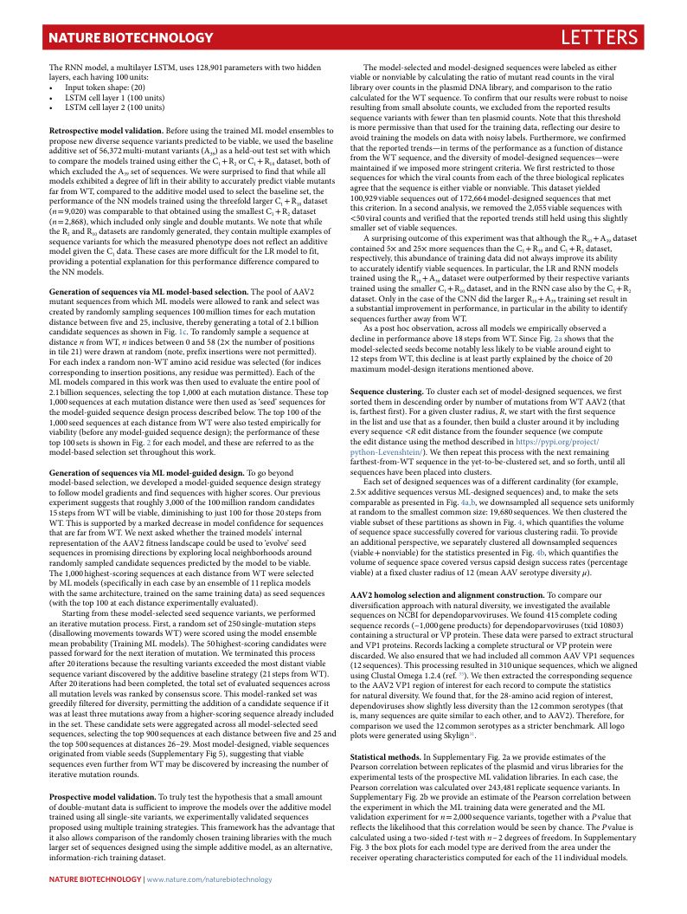
Nature BiotechNology Letters
The RNN model, a multilayer LSTM, uses 128,901 parameters with two hidden The model-selected and model-designed sequences were labeled as either layers, each having 100 units: viable or nonviable by calculating the ratio of mutant read counts in the viral • Input token shape: (20) library over counts in the plasmid DNA library, and comparison to the ratio • LSTM cell layer 1 (100 units) calculated for the WT sequence. To confirm that our results were robust to noise • LSTM cell layer 2 (100 units) resulting from small absolute counts, we excluded from the reported results sequence variants with fewer than ten plasmid counts. Note that this threshold Retrospective model validation. Before using the trained ML model ensembles to is more permissive than that used for the training data, reflecting our desire to propose new diverse sequence variants predicted to be viable, we used the baseline avoid training the models on data with noisy labels. Furthermore, we confirmed additive set of 56,372 multi-mutant variants (A ) as a held-out test set with which that the reported trends—in terms of the performance as a function of distance w to h c i o ch m e p x a c r l e u t d h e e d m th o e d A els t s r e a t i n of e d se u q s u in en g c e e i s t . h W er e t h w e e 3 9 C re 1 s + u R rp 2 r o is r e C d 1 t + o R fi 1 n 0 d d t a h ta a s t e w t, h b i o le t h a l o l f f m ro a m in t t a h i e n e W d T if s w e e q u im en p c o e s , e a d n m d t o h r e e d st i r v i e n r g s e it n y t o c f r i m te o ri d a e . l W -d e e s f i i g r n st e r d e s s t e r q ic u t e e n d c t e o s — th w os e e r e models exhibited a de 3 g 9 ree of lift in their ability to accurately predict viable mutants sequences for which the viral counts from each of the three biological replicates far from WT, compared to the additive model used to select the baseline set, the agree that the sequence is either viable or nonviable. This dataset yielded p ( ( n n e r = = fo 9 2 r , , m 0 8 2 6 a 0 8 n ) ) c , w e w a o h s f i c c t o h h m e i n N p c a N lu ra d m b e l d o e d t o o e n l s t ly h t a r s a t i n i o n g b e l t e d a a i u n n s e d i d n d g u o t s u h in b e g l t e h t m h re e u e s t f m a o n l a d t l s l l . e a W s r t g e C e r n 1 C + ot 1 R e + 2 t h R d a a 1 t 0 t a d w s a h e t t i a l s e e t 1 t < h 0 5 i 0 s 0 , 9 c v r 2 i i r 9 t a e v l r i c i a o o b n u le . n I t s n s e q a a n u s e d e n c v c o e e n r s d i f o i a e u n d t a o t l h y f a s 1 i t 7 s t , 2 h w ,6 e e 6 r 4 r e e p m m o o r o t d v e e e d l d - t d r t e e h s n e i d g 2 n s , 0 e s 5 t d i 5 l s l v e h i q a e u b ld e le n u c s s e e i s q n u g th e t a n h t c i s m e s s e l w i t g i h th tl y the R and R datasets are randomly generated, they contain multiple examples of smaller set of viable sequences. seque 2 nce var 1 i 0 ants for which the measured phenotype does not reflect an additive A surprising outcome of this experiment was that although the R 10 + A 39 dataset p m r o o d vi e d l i g n i g v e a n p t o h t e e n C t 1 i a d l a e t x a p . T la h n e a s t e io c n a s fo es r a th re is m p o er r f e o d rm iff a ic n u c l e t d fo if r f e th re e n L c R e c m om od p e a l r t e o d f i t t o , c re o s n p t e a c in ti e v d e l 5 y, × t h a i n s d a b 2 u 5× nd m an o c r e e o se f q tr u a e i n n c in es g t d h a a t n a t d h id e C no 1 + t a R lw 10 a a y n s d im C p 1 + ro R ve 2 d it a s t a a b se il t i , t y the NN models. to accurately identify viable sequences. In particular, the LR and RNN models trained using the R 10 + A 39 dataset were outperformed by their respective variants Generation of sequences via ML model-based selection. The pool of AAV2 trained using the smaller C 1 + R 10 dataset, and in the RNN case also by the C 1 + R 2 mutant sequences from which ML models were allowed to rank and select was dataset. Only in the case of the CNN did the larger R 10 + A 39 training set result in created by randomly sampling sequences 100 million times for each mutation a substantial improvement in performance, in particular in the ability to identify distance between five and 25, inclusive, thereby generating a total of 2.1 billion sequences further away from WT. candidate sequences as shown in Fig. 1c. To randomly sample a sequence at As a post hoc observation, across all models we empirically observed a distance n from WT, n indices between 0 and 58 (2× the number of positions decline in performance above 18 steps from WT. Since Fig. 2a shows that the in tile 21) were drawn at random (note, prefix insertions were not permitted). model-selected seeds become notably less likely to be viable around eight to For each index a random non-WT amino acid residue was selected (for indices 12 steps from WT, this decline is at least partly explained by the choice of 20 corresponding to insertion positions, any residue was permitted). Each of the maximum model-design iterations mentioned above. ML models compared in this work was then used to evaluate the entire pool of 2.1 billion sequences, selecting the top 1,000 at each mutation distance. These top Sequence clustering. To cluster each set of model-designed sequences, we first 1,000 sequences at each mutation distance were then used as ‘seed’ sequences for sorted them in descending order by number of mutations from WT AAV2 (that the model-guided sequence design process described below. The top 100 of the is, farthest first). For a given cluster radius, R, we start with the first sequence 1,000 seed sequences at each distance from WT were also tested empirically for in the list and use that as a founder, then build a cluster around it by including viability (before any model-guided sequence design); the performance of these every sequence <R edit distance from the founder sequence (we compute top 100 sets is shown in Fig. 2 for each model, and these are referred to as the the edit distance using the method described in https://pypi.org/project/ model-based selection set throughout this work. python-Levenshtein/). We then repeat this process with the next remaining farthest-from-WT sequence in the yet-to-be-clustered set, and so forth, until all Generation of sequences via ML model-guided design. To go beyond sequences have been placed into clusters. model-based selection, we developed a model-guided sequence design strategy Each set of designed sequences was of a different cardinality (for example, to follow model gradients and find sequences with higher scores. Our previous 2.5× additive sequences versus ML-designed sequences) and, to make the sets experiment suggests that roughly 3,000 of the 100 million random candidates comparable as presented in Fig. 4a,b, we downsampled all sequence sets uniformly 15 steps from WT will be viable, diminishing to just 100 for those 20 steps from at random to the smallest common size: 19,680 sequences. We then clustered the WT. This is supported by a marked decrease in model confidence for sequences viable subset of these partitions as shown in Fig. 4, which quantifies the volume that are far from WT. We next asked whether the trained models' internal of sequence space successfully covered for various clustering radii. To provide representation of the AAV2 fitness landscape could be used to ‘evolve’ seed an additional perspective, we separately clustered all downsampled sequences sequences in promising directions by exploring local neighborhoods around (viable + nonviable) for the statistics presented in Fig. 4b, which quantifies the randomly sampled candidate sequences predicted by the model to be viable. volume of sequence space covered versus capsid design success rates (percentage The 1,000 highest-scoring sequences at each distance from WT were selected viable) at a fixed cluster radius of 12 (mean AAV serotype diversity μ). by ML models (specifically in each case by an ensemble of 11 replica models with the same architecture, trained on the same training data) as seed sequences AAV2 homolog selection and alignment construction. To compare our (with the top 100 at each distance experimentally evaluated). diversification approach with natural diversity, we investigated the available Starting from these model-selected seed sequence variants, we performed sequences on NCBI for dependoparvoviruses. We found 415 complete coding an iterative mutation process. First, a random set of 250 single-mutation steps sequence records (~1,000 gene products) for dependoparvoviruses (txid 10803) (disallowing movements towards WT) were scored using the model ensemble containing a structural or VP protein. These data were parsed to extract structural mean probability (Training ML models). The 50 highest-scoring candidates were and VP1 proteins. Records lacking a complete structural or VP protein were passed forward for the next iteration of mutation. We terminated this process discarded. We also ensured that we had included all common AAV VP1 sequences after 20 iterations because the resulting variants exceeded the most distant viable (12 sequences). This processing resulted in 310 unique sequences, which we aligned sequence variant discovered by the additive baseline strategy (21 steps from WT). using Clustal Omega 1.2.4 (ref. 35). We then extracted the corresponding sequence After 20 iterations had been completed, the total set of evaluated sequences across to the AAV2 VP1 region of interest for each record to compute the statistics all mutation levels was ranked by consensus score. This model-ranked set was for natural diversity. We found that, for the 28-amino acid region of interest, greedily filtered for diversity, permitting the addition of a candidate sequence if it dependoviruses show slightly less diversity than the 12 common serotypes (that was at least three mutations away from a higher-scoring sequence already included is, many sequences are quite similar to each other, and to AAV2). Therefore, for in the set. These candidate sets were aggregated across all model-selected seed comparison we used the 12 common serotypes as a stricter benchmark. All logo sequences, selecting the top 900 sequences at each distance between five and 25 and plots were generated using Skylign31. the top 500 sequences at distances 26–29. Most model-designed, viable sequences originated from viable seeds (Supplementary Fig 5), suggesting that viable Statistical methods. In Supplementary Fig. 2a we provide estimates of the sequences even further from WT may be discovered by increasing the number of Pearson correlation between replicates of the plasmid and virus libraries for the iterative mutation rounds. experimental tests of the prospective ML validation libraries. In each case, the Pearson correlation was calculated over 243,481 replicate sequence variants. In Prospective model validation. To truly test the hypothesis that a small amount Supplementary Fig. 2b we provide an estimate of the Pearson correlation between of double-mutant data is sufficient to improve the models over the additive model the experiment in which the ML training data were generated and the ML trained using all single-site variants, we experimentally validated sequences validation experiment for n = 2,000 sequence variants, together with a P value that proposed using multiple training strategies. This framework has the advantage that reflects the likelihood that this correlation would be seen by chance. The P value is it also allows comparison of the randomly chosen training libraries with the much calculated using a two-sided t-test with n – 2 degrees of freedom. In Supplementary larger set of sequences designed using the simple additive model, as an alternative, Fig. 3 the box plots for each model type are derived from the area under the information-rich training dataset. receiver operating characteristics computed for each of the 11 individual models. NAtuRE BiOtECHNOLOGy | www.nature.com/naturebiotechnology
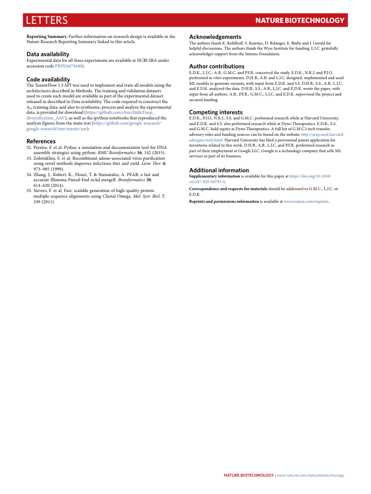
Letters Nature BiotechNology
Reporting Summary. Further information on research design is available in the Acknowledgements Nature Research Reporting Summary linked to this article. The authors thank K. Kohlhoff, S. Kearnes, D. Belanger, E. Bixby and J. Gerold for helpful discussions. The authors thank the Wyss Institute for funding. L.J.C. gratefully Data availability acknowledges support from the Simons Foundation. Experimental data for all three experiments are available at NCBI SRA under accession code PRJNA673640). Author contributions E.D.K., L.J.C., A.B., G.M.C. and P.F.R. conceived the study. E.D.K., N.K.J. and P.J.O. Code availability performed in vitro experiments. D.H.B., A.B. and L.J.C. designed, implemented and used The TensorFlow 1.3 API was used to implement and train all models using the ML models to generate variants, with input from E.D.K. and S.S. D.H.B., S.S., A.B., L.J.C. architectures described in Methods. The training and validation datasets and E.D.K. analyzed the data. D.H.B., S.S., A.B., L.J.C. and E.D.K. wrote the paper, with used to create each model are available as part of the experimental dataset input from all authors. A.B., P.F.R., G.M.C., L.J.C. and E.D.K. supervised the project and released as described in Data availability. The code required to construct the secured funding. A training data, and also to synthesize, process and analyze the experimental 39 data, is provided for download (https://github.com/churchlab/Deep_ Competing interests diversification_AAV), as well as the ipython notebooks that reproduced the E.D.K., P.J.O., N.K.J., S.S. and G.M.C. performed research while at Harvard University, analysis figures from the main text (https://github.com/google-research/ and E.D.K. and S.S. also performed research while at Dyno Therapeutics. E.D.K., S.S. google-research/tree/master/aav). and G.M.C. hold equity at Dyno Therapeutics. A full list of G.M.C.’s tech transfer, advisory roles and funding sources can be found on the website: http://arep.med.harvard. References edu/gmc/tech.html. Harvard University has filed a provisional patent application for 32. Pereira, F. et al. Pydna: a simulation and documentation tool for DNA inventions related to this work. D.H.B., A.B., L.J.C. and P.F.R. performed research as assembly strategies using python. BMC Bioinformatics 16, 142 (2015). part of their employment at Google LLC. Google is a technology company that sells ML 33. Zolotukhin, S. et al. Recombinant adeno-associated virus purification services as part of its business. using novel methods improves infectious titer and yield. Gene Ther. 6, 973–985 (1999). Additional information 34. Zhang, J., Kobert, K., Flouri, T. & Stamatakis, A. PEAR: a fast and Supplementary information is available for this paper at https://doi.org/10.1038/ accurate Illumina Paired-End reAd mergeR. Bioinformatics 30, s41587-020-00793-4. 614–620 (2014). 35. Sievers, F. et al. Fast, scalable generation of high-quality protein Correspondence and requests for materials should be addressed to G.M.C., L.J.C. or multiple sequence alignments using Clustal Omega. Mol. Syst. Biol. 7, E.D.K. 539 (2011). Reprints and permissions information is available at www.nature.com/reprints.
NAtuRE BiOtECHNOLOGy | www.nature.com/naturebiotechnology
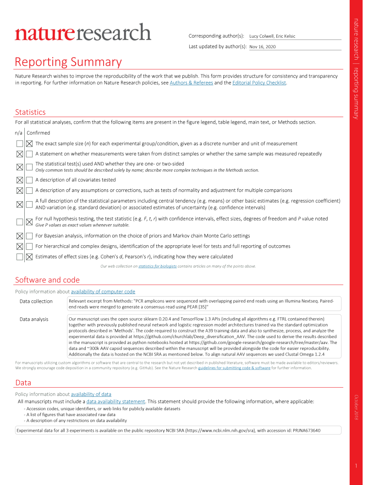